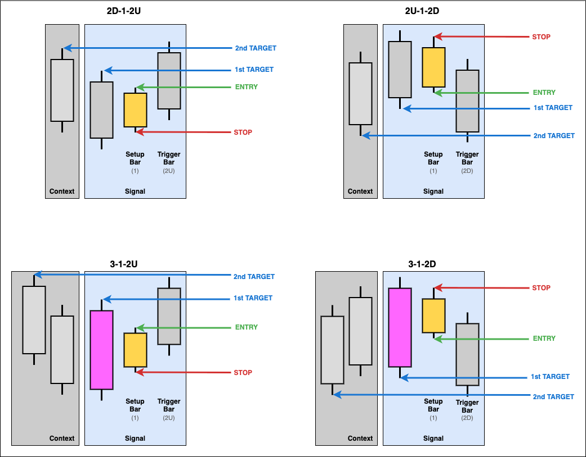
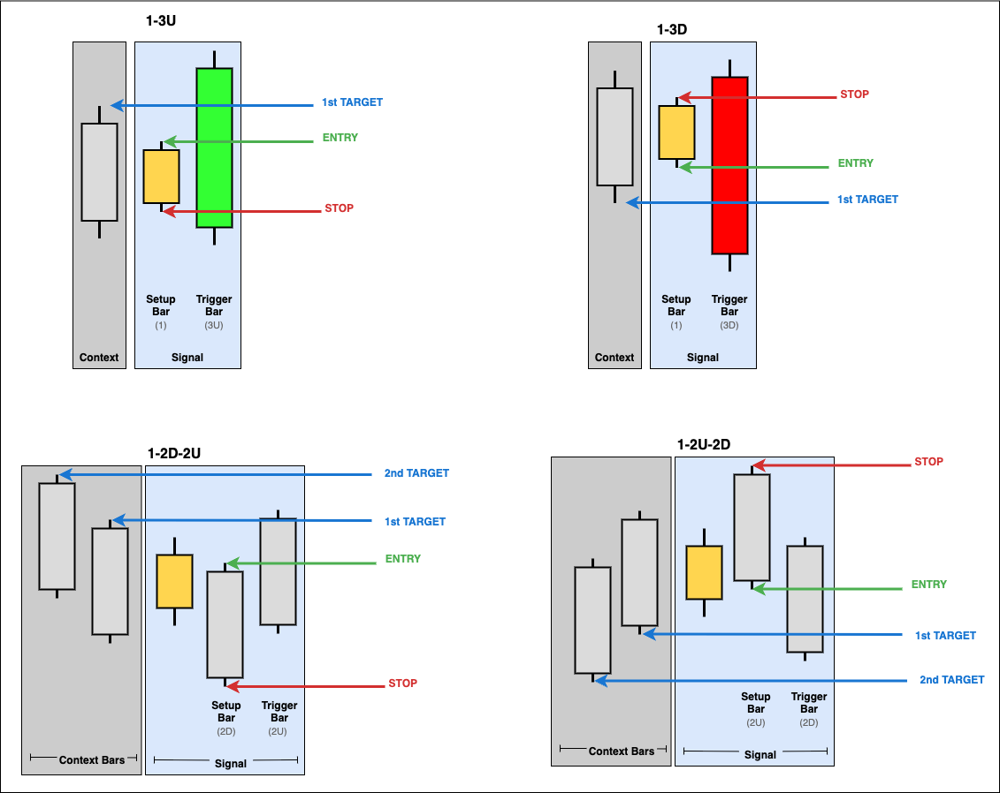
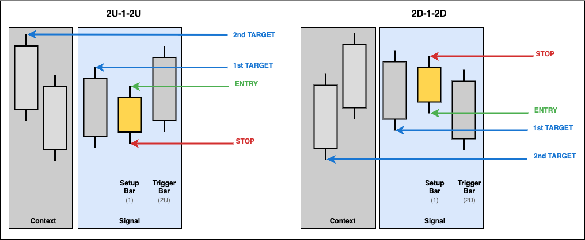

Pattern Terminology and Visual Guide
This guide establishes clear terminology for TheStrat patterns and provides visual diagrams for all reversal and continuation signals.
Core Terminology
Scenarios
TheStrat classifies individual bars based on their relationship to the previous bar:
Scenario "1" - Inside Bar - Current bar's high ≤ previous bar's high AND low ≥ previous bar's low - Consolidation/consolidation - bar is completely contained within previous bar's range - Creates potential for breakout in either direction
Scenario "2U" - Directional Up - Current bar makes a higher high but doesn't make a lower low - Upward directional move - Labeled "2U" in pattern names
Scenario "2D" - Directional Down - Current bar makes a lower low but doesn't make a higher high - Downward directional move - Labeled "2D" in pattern names
Scenario "3" - Outside Bar (Expansion or Broadening formation on a lower timeframe) - Current bar makes both a higher high AND lower low - Expansion - completely engulfs previous bar's range - Labeled "3" in pattern names
All TheStrat patterns are built from combinations of these scenarios (e.g., "2D-2U", "2D-1-2U", "3-2U").
Bar Roles
Setup Bar
- The bar being broken (reversals) or continued (continuations)
- Provides the entry and stop price levels
- Always the bar immediately before the trigger bar (regardless of pattern type)
- In 2-bar patterns (e.g., 2D-2U): The first directional bar (2D)
- In 3-bar patterns (e.g., 2D-1-2U): The inside bar (1)
Trigger Bar
- The bar that completes and confirms the pattern
- Where the signal is detected in the DataFrame
- Always the final bar of the pattern (regardless of pattern type)
- In 2-bar patterns (e.g., 2D-2U): The second directional bar (2U)
- In 3-bar patterns (e.g., 2D-1-2U): The final directional bar (2U)
Price Levels
Entry Price
- Breakout/breakdown level from setup bar
- Long signals: Setup bar high (breakout above)
- Short signals: Setup bar low (breakdown below)
Stop Price
- Invalidation level from setup bar
- Long signals: Setup bar low (invalidation if broken)
- Short signals: Setup bar high (invalidation if broken)
Target Ladder
- Series of target price levels extending to structural bounds
- Detected from historical bars before the setup bar (or before inside bar for 1-2-2 rev-strats)
- Long signals: Ascending ladder of highs (each target higher than previous) extending to
higher_highorlower_highbound - Short signals: Descending ladder of lows (each target lower than previous) extending to
lower_loworhigher_lowbound - First target must be beyond the trigger bar's price (above trigger high for long, below trigger low for short)
Visual Pattern Guide
Inside Bar Reversals

Patterns: 2d-1-2u, 2u-1-2d, 3-1-2u, 3-1-2d
- Yellow candle = Inside bar (consolidation), also the setup bar
- Setup bar provides entry/stop levels
- Targets extend from historical bars beyond trigger bar
2-Bar Reversals

Patterns: 2d-2u, 2u-2d
- Two bars form the reversal pattern
- Setup bar provides entry/stop levels
- Targets extend from historical bars beyond trigger bar
Rev-Strat Patterns

Patterns: 1-3u, 1-3d, 1-2d-2u, 1-2u-2d
- Pattern starts with inside bar (1)
- Setup bar provides entry/stop levels
- Targets extend from historical bars beyond trigger bar
3-2 Context Reversals

Patterns: 3-2u, 3-2d
- Context-dependent patterns (require continuity analysis)
- Scenario 3 in one direction countered by a scenario 2 in the other
- Reversal determined by previous trend context
Inside Bar Continuations

Patterns: 2u-1-2u, 2d-1-2d
- Yellow candle = Inside bar
- Green line = Entry level (setup bar high/low)
- No targets stored for continuations (trend-following)
Pattern Anatomy Example

Detailed 2D-2U Example showing:
- Setup Bar (2D) provides entry at high, stop at low
- Trigger Bar (2U) completes the pattern
- Target ladder detected from historical bars
- Targets extend to higher_high bound
- Actual price levels from real market data
Price Level Rules
Long Reversals (e.g., 2D-2U, 2D-1-2U)
- Entry: Setup bar high
- Stop: Setup bar low
- Targets: Ascending ladder of historical highs extending to
higher_highorlower_highbound - First target must be above trigger bar high
- Each subsequent target higher than previous (ascending values: target_1 < target_2 < ...)
- Maximum targets determined by
max_targetsconfig - Relationship:
stop < entryandtrigger_high < target_1 < target_2 < ... ≤ bound
Short Reversals (e.g., 2U-2D, 2U-1-2D)
- Entry: Setup bar low
- Stop: Setup bar high
- Targets: Descending ladder of historical lows extending to
lower_loworhigher_lowbound - First target must be below trigger bar low
- Each subsequent target lower than previous (descending values: target_1 > target_2 > ...)
- Maximum targets determined by
max_targetsconfig - Relationship:
stop > entryandtrigger_low > target_1 > target_2 > ... ≥ bound
Continuations (All patterns)
- Entry: Setup bar high (long) or low (short)
- Stop: Setup bar low (long) or high (short)
- Targets: None (trend-following, no target ladder)
All Pattern Names Reference
Reversal Patterns - Long Bias
2-Bar Patterns:
2D-2U- Down bar followed by up bar (simple reversal)3-2U- Outside bar followed by a reversal in the opposite direction.
3-Bar Patterns:
1-2D-2U- Inside, down, up (Rev Strat)3-1-2U- Outside, inside, up3-2D-2U- Outside, down, up2D-1-2U- Down, inside, up
Reversal Patterns - Short Bias
2-Bar Patterns:
2U-2D- Up bar followed by down bar (simple reversal)3-2D- Outside bar followed by a reversal in the opposite direction.
3-Bar Patterns:
1-2U-2D- Inside, up, down (Rev Strat)3-1-2D- Outside, inside, down3-2U-2D- Outside, up, down2U-1-2D- Up, inside, down
Continuation Patterns - Long Bias
2-Bar Patterns:
2U-2U- Up bar followed by up bar (continuation)
3-Bar Patterns:
2U-1-2U- Up, inside, up
Continuation Patterns - Short Bias
2-Bar Patterns:
2D-2D- Down bar followed by down bar (continuation)
3-Bar Patterns:
2D-1-2D- Down, inside, down
Implementation Reference
Code Locations
Signal Detection: thestrat/indicators.py
Signal Objects: thestrat/signals.py
Configuration: thestrat/schemas.py
Related Documentation
- Signal Metadata Guide - Complete field documentation
- DataFrame Schema - Output column specifications
- Asset Classes - Timezone and session configuration
- Examples - Real-world usage examples